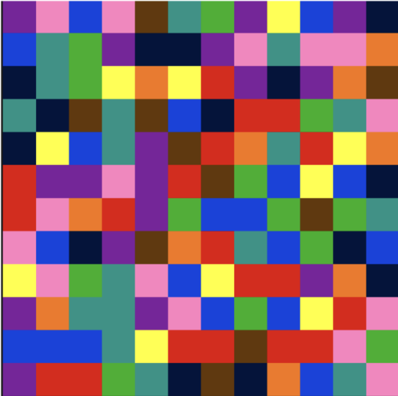

July 2026 — Appendix to the LatentLens paper
A word-by-word excerpt from the Behind the Scenes appendix of LatentLens: Revealing Highly Interpretable Visual Tokens in LLMs (ICML 2026). See also the Behind the Scenes of my whole PhD.
The goal of this section is to make science more transparent and engaging, showing not just the polished paper at the end but also all the detours and lessons learned.
This project started last winter (December 2024) when the first author, originally working on vision-and-language models in general, was determined to pivot towards understanding models and fundamental science. So interpretability was the natural direction to look into, from afar it had been intriguing to follow the field the past few years. But just doing interpretability for the sake of interpretability did not feel like the right approach. So what was an actual fundamental question that many people would care about, ourselves included, where interpretability could naturally help?
The first author tried to present too many potential ideas at once in their lab meeting. There was not enough time to present them all, and it would not have been a fun presentation to follow with too many disjoint pitches. So a lab colleague simply asked: “Which one of these questions are you genuinely excited about?” And this is how we ended up with this paper and the research question we ask: How can frozen LLMs possibly make sense of visual tokens? Do they look like language tokens to the model? We started with this simple question but the first author could not have possibly imagined all these new insights we would stumble upon, such is the process of science. It was really a situation of unknown unknowns: the kind of experiments and ideas we would eventually end up with were inconceivable at the time, and how with each new experiment, three new options opened up. As a result writing the paper in 8 pages was very challenging and three sections had to be cut even from the appendix.
If the first author had to take away just one lesson from the project, it would be to never trust long-held assumptions (either by oneself or the field). We had assumed that visual tokens were not really interpretable with nearest neighbors from the embedding matrix, and several papers hinted in that direction. In retrospect, we should have simply tested this empirically across several models from day one. Instead, the first author read papers about anisotropy and other interpretability literature, prematurely concluding that embeddings from different modalities live in entirely different narrow cones.1 So, then the question became: If these tokens are not interpretable and live in different subspaces, maybe we have to perform more linear algebra and embedding space tricks to show how they relate to text? Rotate them around, learn some simple mappings, specific subspaces, ...?
Eventually, the first author hypothesized: Maybe visual tokens are not directly mapped to interpretable words (measured by NNs from the embedding matrix) because real data is messy? Visual objects in a scene span many tokens, or a single token might represent several objects and different attributes. So it would be no surprise that they don’t just cleanly map to a single concept. But what if we could simplify this situation? What if we could make the data we train on simpler and simpler until we see very predictable nearest neighbors. This is where the project went “off-track” for a while and we started experimenting with toy datasets we coined Mosaic, where the model gets as input an image like this:

The LLM would then be trained to predict the sequence of color words one after the other (“red blue red pink ...”), essentially “copying” each visual token’s corresponding color to the text space. We observed some interesting quirks, but surprisingly not many interpretable nearest neighbors (i.e. color words from the embedding matrix). In fact, fewer than on the natural images we report in this paper. We even ran various causal patching experiments, studied high-norm outliers, etc! They all seemed interesting at the time, but again, simply testing our assumptions early would have saved us these detours. At this point we had already adopted the Molmo codebase for training models, since we cared about how frozen LLMs make sense of visual tokens. But most VLMs you can take off-the-shelf unfreeze the LLM weights at some stage of training, which is why we opted for our controlled training setup that the final paper still builds upon.
The first author does not remember when exactly we finally questioned our assumptions, and empirically tested the interpretability on natural images. But sometime around July, we started exploring interactive demos of natural images with the top NN from the embedding matrix. Since we happened to explore OLMo+CLIP-ViT, we were surprised to see so many meaningful words. The cosine similarity was low (between e.g. 0.07 and 0.15), much lower than what LatentLens eventually yields. Nonetheless this was encouraging, but it soon became clear that automating the judgment of whether an NN is interpretable is not trivial.2
With these exciting findings (40% to 60% of tokens in OLMo+CLIP-ViT are interpretable), the initial story of the paper was roughly: Visual tokens at layer 0 are more interpretable than some would assume! In the background we kept working on directions that did not end up in the main paper or even appendix: 1) We conducted ablations under which conditions this interpretability would increase or decrease, now in the ablations appendix, though without any trace of these initial EmbeddingLens results. 2) We always wondered what these strange non-interpretable tokens encode... They often had the same EmbeddingLens nearest neighbors, they were often in non-salient background regions. Were they something akin to task vectors or register tokens? At the time this seemed like an interesting enough story to publish: Past work assumes visual tokens are rarely interpretable at the input via EmbeddingLens but here we show for some models that is not the case. We show ablations, we show patching experiments. Some qualitative results. It is good we kept exploring further: Some co-authors kept wondering, especially SR and MM: What happens to visual tokens at LLM layers after the input? And that’s where the final paper we now have started taking shape. We adopted EmbeddingLens and LogitLens not just at the beginning or end of the model but throughout. And eventually we wondered: What if we use contextual embeddings instead of static embedding matrices? (Thank you MM and Elinor Poole-Dayan for the nudge!)
This project co-occurred with the rise of Cursor and Claude Code. Especially interactive demos for quick exploration are now much easier to build, crucial for projects like this one. Due to the speed of experimentation, a lot of ideas on the side did not make it into the paper but can now be easily continued as follow-up work.
As mentioned above, testing the simplest assumptions early on is something the first author will keep as a guiding principle for future research. The field knows less than one would expect. Models change constantly, experiments might look different with slightly different setups. Re-run what others have seemingly done before.
The process of open-ended discovery is very enjoyable and naturally leads to interesting brainstorming sessions with colleagues and friends. The first author highly recommends working at least on one interpretability project in one’s research journey. The community is quite unique, reflective and open to good ideas (ideally) regardless of whether they are immediately useful downstream. The first author recently wrote a blog post, which goes into detail about how the pivot to interpretability last year went: Better late than never: Getting into interpretability in 2025.
This project carries a lot of meaning. It will be the final chapter of the first author’s PhD and was in many ways a perfect ending to this five-year long journey. I have rarely felt so proud of a work, and again not just because of the final product, but the whole process: Every single collaborator on here was fantastic, either as my closest friends throughout the PhD or as recent cherished connections and mentors. A special shout out goes to MM and DE who both put a lot of care into this paper. This project also perfectly encapsulates the first author’s strengthened conviction to stay in academia for the long haul. In a way it represented what academia ideally could be and what we should strive for it to be. Looking back at other projects, never before did I have so many enjoyable interactions when sharing what we are working on. Even before the work is now getting out, I gave four talks about it (three in-person), and many more Mila coffee table chats. It made me realize how science is so much more than papers, and papers are just one way to let others know what you found. One can give talks, write blog posts, make videos, tell others about your work, write it into the snow, showcase it as a demo.
1 We even ran lots of experiments on anisotropy and concluded that effects reported in other papers seemed overly simplified. At this point I wouldn’t feel confident saying that different modalities live in different narrow cones inside e.g. an LLM.
2 It would take another 3 months to develop the full LLM judge we eventually relied upon.